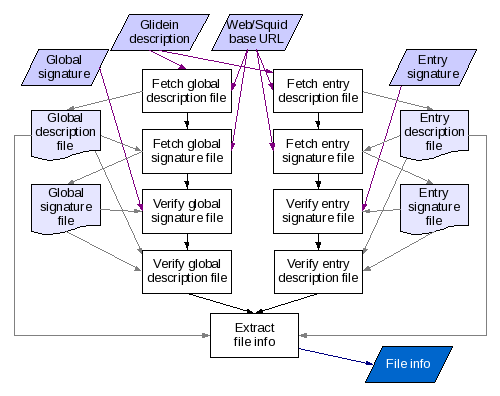

WMS Factory Design
Glidein Internals
Overview of the glidein mechanism
A glidein is, simply put, a properly configured HTCondor Startd submitted as a Grid job. Once a glidein starts on a worker node, it will join a specified HTCondor pool, making the obtained Grid-batch slot a slot in the HTCondor pool. At this point, a regular HTCondor job can start there as if was a dedicated resource. See the picture below for a schematic overview.

HTCondor glideins are a convenient way to expand a HTCondor pool. Apart from the task of submitting new glideins as needed, everything else stays the same as in a dedicated pool.
In GlideinWMS, the Glidein Factory is the one that submits the glideins to the Grid resources, as shown in the picture below.

This document describes how a glidein configures and starts the HTCondor Startd.
The Glidein Factory sends just a wrapper. However, it must perform several tasks, including:
- Check that the working environment on the worker node is reasonable (else user jobs will fail)
- Obtain the HTCondor binaries
- Configure HTCondor
- Prepare the environment for HTCondor and the user jobs
- Start HTCondor
Given the complexity of the task, and for the sake of flexibility, it makes sense to split the script in several pieces. So the glidein job is composed of several pieces, including a startup script, helper scripts, the HTCondor binaries and a base configuration file.
However, having a Grid job with data files can represent a challenge; each Grid flavor treats data in a different way. To make the system as general as possible, the glideins rely on HTTP for data distribution. However, since the HTTP protocol is not a secure one, the glidein implements its own security on top of it.
The picture below for an overview.

The security is implemented using SHA1 signatures. The signature checking is implemented in two steps:
The signatures of all the files to be transfered are saved in a signature file and stored on the Web server. The signature of the signature file is then passed as one of the parameters of the glidein job.
The glidein startup script loads the signature file from the Web server and verifies its signature. All other downloads, including the file containing the list of other files, is checked against the values in the signature file. See the pseudo-code below.
wget http://head.fnal.gov/glidein_g1/signature.sha1 sha1sum known_sha1 signature.sha1 if $?!=0 then exit 1 fi grep files_name signature.sha1 > file.sha1 wget http://head.fnal.gov/glidein_g1/files_anme sha1sum -c file.sha1 if $?!=0 then exit 2 fi
Assuming that the glidein arguments cannot be tampered with, all the files are tamper evident.
If a file is marked as executable, it will be run. This allows to
customize the glidein logic at will.
However, if not all files
need to be executable; plain files, like configuration files, and
tarballs are also supported.
Program flow
The glidein startup script is tasked to setup the working
environment, configure HTCondor and launch the HTCondor
Startd.
As said in the overview, a glidein is basically a
wrapper that downloads other files, executing some of them.
A
private working directory is used to minimize interference with other
processes running on the same node.
At the high level, three types of files are handled:
- Signature files
- Files containing lists of other files
- Helper files; these can be either simple files, tarballs or executables.
The files are also split between general, or Factory wide, and entry-specific ones. Since order can be important, especially when executables are involved, the glidein allows for global helper files to be loaded (and executed) before and/or after the entry-specific ones. One executable is special; this is the helper script that starts the HTCondor Startd. and must be the last to be run, so it is handled in a special way.
See the picture below for an overview.

You may have noticed that after the initial setup, all further communication between stages is carried out by a locally created config file. The reason for this is due to the fact that environment changes can only propagate in one direction, from parent to child. Since most of the setup is done by external executables that would be unacceptable, the config file was introduced.
Some of the stages are pretty self explanatory, but most need further details. In particular:
Get signatures and file info
The retrieval of the signature files is a multi step process. The
main reason being that the startup script does not know the name of
the signature file.
Instead, the glidein startup script receives
the name of the file that contains the names of all the other important
files. And that file is fetched first.
Once the name of the
signature file is know, it is fetched and validated against the
provided SHA1 signature.
Once the signature file can be trusted,
the description file is verified, too, using the signature present in
the signature file.
Once the signature files are fetched, the content of the description files is loaded into memory for further processing.
See the figure below of an overview.

You have probably noticed that the name of the signature file is extracted before validating the integrity of the description file. This can result in a compromised signature being fetched.
However, this is not a security vulnerability. If the wrong signature file is indeed downloaded, the signature of the signature will not match and the glidein will terminate with a failure.
Download and process a file
The glidein startup script will download and process several files. This stage will download one of these files.
File downloading and processing can be conditional; if a conditional variable name is given and such conditional variable evaluates to False (0) in the configuration file, the stage is effectively a NOOP.
The stage flow requires a fetch of a file over the network and the
validation against the proper signature file. If for some reason the
signature does not match, the glidein will terminate with a
failure.
Some files need further processing; they are either
tarballs that need to be unpacked, or executables that need to be
run. This stage will take the appropriate action.
Finally, the invoker of this stage may request for the file processing to be recorded in the configuration file, by providing an output variable name.
See figure below for an overview.

Configure and start HTCondor
As mentioned before, most of the work in a glidein is carried on
by the HTCondor
Startd. This stage the condor_startd is configured and
launched.
To do this, the script parses the HTCondor variable
description files and extracts the needed values from the glidein
configuration file. If no values is provided, the default is used.
Once all the variables are collected, the condor_config is
created.
The script now launches two HTCondor startds, by means of a
condor_master. The first one is a monitoring startd and is not
managed.
The second one is instead the main, job startd, and the
glidein code blocks on it. This startd will do the bulk of the
processing, advertising itself to a collector and accepting user
jobs.
Once the main startd ends, the monitoring startd is killed and the log files parsed for job statistics that will be printed in standard output. For debugging purposes, the whole log files are then compressed and streamed to the standard error.
See figure below for an overview.

Source code distribution
The glidein code is composed of a set of shell code scripts, mostly using bash, although grep and awk are used extensively, too.
The files are located in glideinWMS/creation/web_basebut are copied to the Factory configuration directory during the Factory configuration.
The picture below shows the dependency tree of the most used scripts. The optional scripts are grayed out.

Configuration files
The glidein gets the configuration parameters from two sources; from configuration files and from command line arguments.
Two configuration file (classes) are copied from glideinWMS/creation/web_base
- condor_config(*) - contains the base condor configuration. It will be extended at runtime by the glidein scripts.
- condor_vars(*) - contains the description and the defaults for the variables used by the glidein. Any meaningful parameter should be documented here.
Another set of configuration files is generated during the Factory configuration:
- constants – contains the values for a set of variables
- grid-mapfile – contains the DNs of the trusted services
- file-list.lst – contains the list of files to download
- description.cfg – contains the logical to actual name mapping
- signature.sha1 – contains the signatures of the files